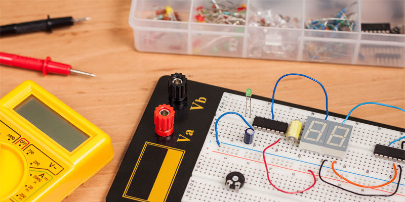

Building an Arduino Theremin: Sound with Electronics
June 10, 2025
Learn how to create a musical instrument using Arduino, ultrasonic sensors, and some coding magic. Perfect for electronics beginners and music lovers.
Tools: Arduino, Ultrasonic Sensor, C++
Difficulty: Intermediate
Read More
Difficulty: Intermediate